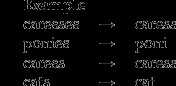

Naïve Bayes Classifier for Text Classification
Introduction:
What are we doing?
In this tutorial we will be building a Naïve Bayes Text Classifier. A Naïve Bayes Classifier is the easy to implement classifier. It uses Conditional probabilities and Bayes Theorem to calculate the probability of classification that we will see in detail in this blog.
Dataset used?
In this blog we will use the dataset provided in Ford Sentence Classifiaction Dataset Kaggle competition. This is a text classification competition. Here we are given a collection of job description sentences and their respective types in the training dataset. In the test dataset we have a collection of job descriptions sentences and we have to classify them among 6 types ['Requirement' 'Responsibility', 'SoftSkill', 'Education', 'Experience', 'Skill'].
Main body:
Introduction to NBC:
Naïve Bayes Classifier is the one of the simplest classification models. This model uses Bayes probability theorem. In this blog we will be using NBC for text classification. Here we will classify the sentences based on the words present in it.
Bayes theorem provides a way of calculating posterior probability P(c|x) from P(c), P(x) and P(x|c) as per equation below:

Source: https://www.analyticsvidhya.com/blog/2017/09/naive-bayes-explained/
Here,
P(c|x) is the posterior probability of class (c, target) given predictor (x, attributes).
P(c) is the prior probability of class.
P(x|c) is the likelihood which is the probability of predictor given class.
P(x) is the prior probability of predictor.
For our text classification,
c will be the target class type that we want to predict for each test sentence.
x will be our list of tokens from sentence for which we want to predict the target class.
To calculate P([w1,w2,w3,…..]/t.c.) naïve assumption is used. Naïve assumption states that all the features are mutually independent. So our above equation becomes
Laplace Smoothing:
If a word that is present in test dataset but is not present in our train vocabulary, then it will have zero probability, which when plugged in the Bayes theorem, will give zero probability. So, to resolve this problem Laplace smoothing is used. In this technique count of each word is increased by ‘alpha’ as follows:
Steps:
In this step we will load the given data into pandas dataframe. Here we have separate files for training data and testing data. So, we will create two datasets. Further we will divide the training dataset into a training dataset and validation dataset in the ratio of 75%-25%. We will use this validation dataset to find optimal parameters for our model.
If we check the given data properly, we will see that there are some mission values in ‘New_sentences’ columns. We will simply replace these missing values with the blank string.
To use NBC, we need to convert these job descriptions sentences into individual words. As we can see in sample sentences, there are many punctuation marks and other symbols that we must remove. We will use regular expressions to filter out these symbols and keep only the words. This step is called tokenization. Next, we will further process these tokens. We will remove all the stop words and numeric tokens as they will not provide any valuable information to NBC model. Also, we will ignore the tokens which have length less or equals to 2 and which are not English.
We will convert all the valid tokens to their lemmatized forms. Lemmatization is the process in which a word is mapped to its root/dictionary form. It uses vocabulary and morphological analysis of words, normally aiming to remove inflectional endings only and to return the base or dictionary form of a word, which is known as the lemma.[1]
Example:
Source [1]
[Image]
In this step we will be building a vocabulary based on our train data. Here we will combine all the tokens according to their Target class. For example, we will combine all the tokens from all the sentences which have target class “Education” into one list.
Based on the above dataframe, we will create another dataframe called word_count_type, which will have count of how many times a particular word (from vocabulary) appeared in a sentence with each target class.
In the above “word_count_type” dataframe we can see that many of the counts are zero. So, we must use Laplace Smoothing to avoid zero probability. So, we will increase the count of every word in “word_count_type” dataframe by 1.
Next step, we will use this smoothened dataframe (smoothed_word_count_type) to calculate probabilities for each validation/test sentence for each target class type. We will compare these probabilities and the target class type with maximum probability will be our predicted target class type.
Here we will try different alpha values for laplace smoothing. We have passed [1,25,50,75,100] as alpha values and got the accuracy for these alpha values based on validation dataset.
We will use the optimal parameter that we found in the above step and use it to predict the target class for the test dataset.
References:
[1] https://nlp.stanford.edu/IR-book/html/htmledition/stemming-and-lemmatization-1.html
[2] https://www.analyticsvidhya.com/blog/2017/09/naive-bayes-explained/
[3] Text Classification and Naïve Bayes - https://web.stanford.edu/class/cs124/lec/naivebayes2021.pdf